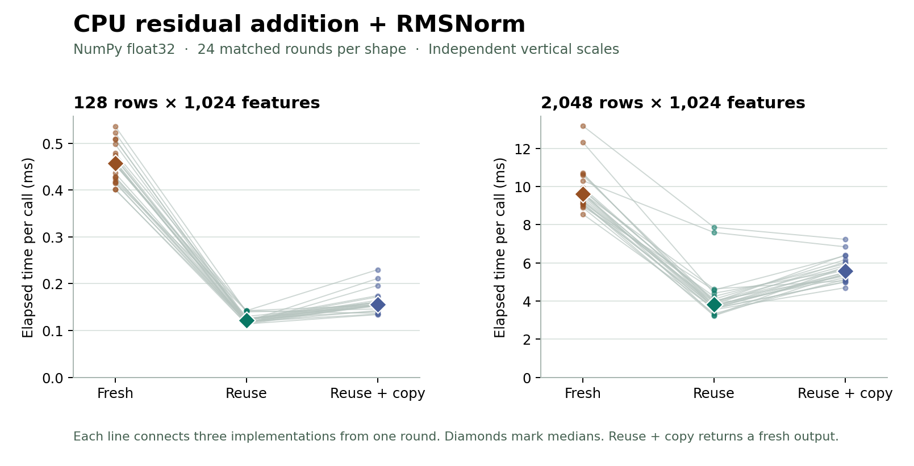

RMSNorm 的临时数组，值得复用吗？
对同一组输入执行残差加法和 RMSNorm，比较三种 NumPy 写法。在本机 CPU 的 2048 × 1024 输入上，常规实现耗时中位数为 9.61 ms；复用临时缓冲且每次返回独立输出为 5.57 ms。最大矩阵上的三种结果都通过了与 FP64 参考值的比较。

输出要保留多久？
| 每次调用的输出 | 128 × 1024 | 2048 × 1024 |
|---|---|---|
| 新建临时数组，返回独立结果 | 0.457 ms | 9.613 ms |
| 复用缓冲区，下次调用覆盖结果 | 0.122 ms | 3.821 ms |
| 复用缓冲区，复制一份独立结果 | 0.155 ms | 5.569 ms |
第三种实现专门测了保留结果的成本。比较接口行为相同的两种实现时，应看第一行和第三行。计时包含一次完整的 CPU 算子调用，各实现先预热，在固定输入上做 24 轮平衡顺序的对照。缓冲区首次创建在复用路径计时范围以外。查看逐轮数据和数值误差
另外两项可以复现的工作
分块正确性。矩阵平方和验证覆盖了手算例子、课堂形状、尾块和空分区。4097 行分为 1024、1024、1024 和 1025 行，检查了边界连续性及最终范数。查看 5 组验证记录
Qwen3-8B 融合对照。分析器读取课程 Notebook 的输出，核对短、长输入的实际 token 数、融合开关、计时和文本质量。本项目已验证分析器，昇腾 NPU 上的实测数据待采集。实验采集方法与复现步骤
复现实验命令
python cpu/check_reduction.py python -m pip install -r requirements.txt python rmsnorm/compare.py --output local-results/cpu-rerun.json python -B -m unittest discover -s inference -p "test_*.py"
本版代码、图表和报告由 Codex 辅助生成并在本机运行。课程来源、版本和贡献说明见 README。